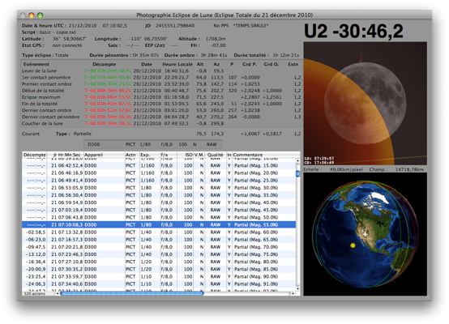
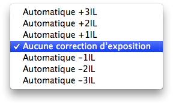
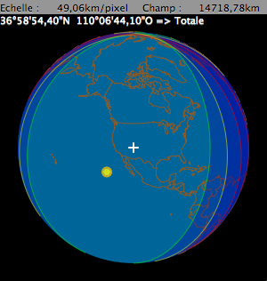

| |
Fonctionnalités
Fenêtre Principale
Menus
Configuration Initiale
Préparatifs pour l’Eclipse
Format des Fichiers de Script
Configuration APN
Notes
Dépannage
Raccourcis et Astuces
Remerciements
|

La taille de la fenêtre peut être modifiée afin de s’adapter à un écran plus petit.
Première ligne (date/heure):
- Date
- Heure
- Jour Julien
- Etat Pulse-Per-Second du GPS
- Erreur Horloge
- Ecart-type du temps GPS en secondes (bien si moins d’un dixième de seconde)
Deuxième ligne (script) :
Troisième ligne (localisation):
- Latitude utilisée pour l’affichage et le calcul des circonstances locales
- Longitude utilisée pour l’affichage et le calcul des circonstances locales
- Altitude utilisée pour l’affichage et le calcul des circonstances locales
- Nom du lieu de l’observateur
Quatrième ligne (informations GPS):
- Etat du GPS (non connecté, non disponible, Valid Norm Fix 2D, Valid Norm Fix 3D, Valid Diff Fix 2D ou Valid Diff Fix 3D)
- Satellites utilisés / satellites visibles
- Estimation de l’erreur de position (2σ)
- Fuseau horaire tel que défini au niveau du lieu d’observation.
Cinquième et sixième lignes (informations sur la ligne de centralité):
- Type de l’éclipse en ce lieu (totale, partielle, pénombrale, aucune)
- Durée de la pénombre en ce lieu
- Durée de l’ombre en ce lieu
- Durée de la totalité en ce lieu
Information phénomène:
- Nom de cet événement
- Décompte pour cet événement
- Date UTC pour cet événement, où date locale si le mode heure locale est sélectionné
- Heure UTC pour cet événement, où heure locale si le mode heure locale est sélectionné (une étoile à droite indique que la valeur est lue depuis le script courant)
- Altitude vraie du centre de la Lune pour cet événement (ce n’est pas l’altitude apparente tenant compte de la réfraction)
- Azimut de la Lune pour cet événement (vers l’est depuis le nord géographique)
- Angle au pôle (P) ou au zénith (Z ou V) pour cet événement, en fonction du menu contextuel
- Grandeur de la pénombre de l’éclipse pour cet événement
- Grandeur de l’ombre de l’éclipse pour cet événement
- Facteur d’extinction pour cet événement (1 = pas d’extinction, 2 = doublez vos temps d’exposition, etc)
Circonstances locales courantes:
- Type de l’éclipse
- Altitude vraie du centre de la Lune
- Azimut de la Lune
- Grandeur de la pénombre de l’éclipse
- Grandeur de l’ombre de l’éclipse
- Facteur d’extinction
Prochaine action du script:
- Appareil photo numérique à utiliser
- Action
- Temps d’exposition
- Ouverture
- Sensibilité ISO
- Taille/qualité d’image
- Correction d’exposition globale
Un indicateur signale aussi quelles corrections sont appliquées: R+H+ signifie que la réfraction atmosphérique (R) et l’horizon apparent (H) sont pris en compte. Si le signe plus (+) est remplacé par un signe moins (-), alors la correction correspondante est désactivée. Lorsqu’une étoile (*) est utilisée, alors la correction est activée mais non significative dans le contexte.
Liste complète des actions du script (les colonnes peuvent être interverties):
|
- Décompte jusqu’à exécution de l’action
- Heure HH:MM:SS.S UTC d’exécution
- Appareil photo numérique à utiliser
- Action
- Temps d’exposition
- Ouverture
- Sensibilité ISO
- Q ou IL (Indice d’Illumination), en fonction du menu contextuel
- Temps d’attente après le verrouillage du miroir
- Taille/qualité d’image
- Incrémentiel
- Commentaire
|
|
Menu contextuel pour la correction d’exposition

Ce menu contextuel permet d’effectuer une correction d’exposition
sur toutes les expositions chargées depuis le script courant.
|
Affichage du décompte en haut à droite:
- Affiche, en grands caractères, le décompte avant le prochain événement
Image de la Lune:
- Au choix zénith vers le haut (le diagramme correspond à ce que vous observeriez avec des jumelles) ou alors nord céleste vers le haut
- Le trait rouge indique le pôle nord céleste, que les télescopes sur montures équatoriales suivent. La ligne jaune discontinue indique l’écliptique. Le trait vert indique le pôle nord de la Lune.
- L’affichage est assez précis avec la possibilité de visualiser la surface de la Lune en position. Par contre la réfraction n’est pas prise en compte.
Carte de l’éclipse:
- Cette carte peut être utilisée pour déterminer les meilleurs lieux d’observation de l’éclipse ainsi que son type.
- La croix blanche au milieu de la carte matérialise votre lieu d’observation. Le point où l’éclipse est maximum, quand il est visible, est signalé par un point jaune cerclé de orange.
- Nord vers le haut.
- L’échelle de la carte s’affiche au-dessus.
- Les coordonnées géographiques du lieu survolé par le pointeur de la souris ainsi que le type de l’éclipse s’affichent dans le coin supérieur gauche de la carte. Un menu contextuel permet de désactiver ou d’activer cette fonctionnalité.
Un schéma au maximum de l’éclipse depuis le lieu survolé peut aussi être affiché.
- Le terminateur solaire est animé. La fréquence de mise à jour, ou sa désactivation complète, peuvent être modifiées à l’aide du menu contextuel obtenu par un clic droit sur la carte de l’éclipse.
- Les lignes aux limites sont respectivement de couleur verte pour les contacts extérieurs avec la pénombre de la Terre, jaune pour les contacts extérieurs avec l’ombre et enfin rouge pour les contacts intérieurs avec l’ombre.
- Quand la surface de la Terre NASA Blue Marble n’est pas affichée, alors les lieux où l’éclipse est visible, totalement ou partiellement, sont en bleu clair devenant de plus en plus foncé au fur et à mesure.
- Les lieux où il n’y a pas d’éclipse sont en bleu foncé.
- Dézoomez suffisamment pour voir apparaître en noir l’espace sidéral autour de la terre.
- La carte est plutôt précise et prends en compte les corrections dues à la réfraction quand cela est possible.
|

|
|